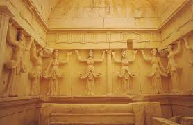
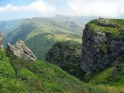
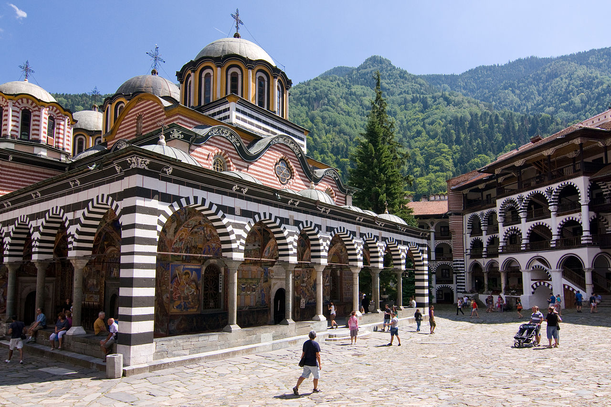

AUSTRIA
BELGIUMN
BULGARIA
CROATIA
CYPRUS
CZECH REPUBLIC
DENMARK
ESTONIA
FINLAND
FRANCE
GERMANY
GREECE
HUNGARY
ITALY
LATVIA
LITHUANIA
MALTA
NETHERLANDS
POLAND
PORTUGAL
ROMANIA
SLOVAKIA
SLOVENIA
SPAIN
SWEDEN
UNITED KINGDOM
- FLAGS OF EUROPE


Bulgaria a country in Europe
| FACTS ON BULGARIA | |
|---|---|
| Capital: | Sofia |
| Political system: | Parliamentary Republic |
| Language: | Bulgarian |
| Currency: | Bulgarian lev BGN |
| PLACES TO GO WHEN IN BULGARIA |
|---|
| Thracian Tomb of Sveshtari |
| Balkan Mountains |
| Rila Monastary |
| Alexander Nevsky Cathedral, Sofia |
| Tsarevets (fortress) |
| Boyana Church |

TThe highlight at this Unesco-protected Thracian settlement is a nearly
perfectly preserved three-chamber burial tomb from about 300 BC.
perfectly preserved three-chamber burial tomb from about 300 BC.

The Balkan mountain range is a mountain range in the eastern part of
the Balkan Peninsula.
the Balkan Peninsula.
| FACTS ON THRACIAN TOMB OF SVESHTARI |
|---|
| The high quality of the construction, the fine artwork and reliefs adorning the tomb, and the exquisite burial gifts attest to the advanced state of the civilisation. |
| Visitors are free to walk throughout the compound and visit a Muslim shrine from the 16th century. It's located about 8km from the town of Isperih, in the village of Sveshtari. |
| FACTS ON BALKAN MOUNTAINS |
|---|
| The Balkan range runs 560 km from the Vrashka Chuka Peak on the border between Bulgaria and Serbia eastward through central Bulgaria to Cape Emine on the Black Sea. The highest peaks of the Balkan Mountains are in central Bulgaria. |
| The highest peak is Botev at 2,376 m, which makes the mountain range the third highest in the country, after Rila and Pirin. The mountains are the source of the name of the Balkan Peninsula. |

The Monastery of Saint Ivan of Rila, better known as the Rila Monastery
The St. Alexander Nevsky Cathedral is a Bulgarian Orthodox cathedral in Sofia.
| FACTS ON RILA MONASTERY |
|---|
| The largest and most famous Eastern Orthodox monastery in Bulgaria. It is situated in the southwestern Rila Mountains, 117 km south of the capital Sofia in the deep valley of the Rilska River at an elevation of 1,147 m (3,763 ft) above sea level, inside of Rila Monastery Nature Park. The monastery is named after its founder, the hermit Ivan of Rila (876 - 946 AD), and today houses around 60 monks. |
| Founded in the 10th century, the Rila Monastery is regarded as one of Bulgaria's most important cultural, historical and architectural monuments and is a key tourist attraction for both Bulgaria and Southern Europe. In 2008 alone, it attracted 900,000 visitors.[1] The monastery is depicted on the reverse of the 1 lev banknote, issued in 1999. |
| FACTS ON ALEXANDER NEVSKY CATHEDRAL, SOFIA |
|---|
| Built in Neo-Byzantine style, it serves as the cathedral church of the Patriarch of Bulgaria and it is one of the largest Eastern Orthodox cathedrals in the world, as well as one of Sofia's symbols and primary tourist attractions. |
| The St. Alexander Nevsky Cathedral in Sofia occupies an area of 3,170 square metres (34,100 sq ft) and can hold 10,000 people inside.[1] It is the second-largest cathedral located on the Balkan Peninsula, after the Cathedral of Saint Sava in Belgrade. |
Tsarevets Buttress on Trinity Peninsula, Antarctica is named after the site.
The Boyana Church is a medieval Bulgarian Orthodox church situated on the outskirts of Sofia.
| FACTS ON TSAREVETS (FORTRESS) |
|---|
| Tsarevets is a medieval stronghold located on a hill with the same name in Veliko Tarnovo in northern Bulgaria. |
| Tsarevets is 206 metres (676 ft) above sea level.[1]It served as the Second Bulgarian Empire's primary fortress and strongest bulwark from 1185 to 1393, housing the royal and the patriarchal palaces, and is a popular tourist attraction.[2] |
| FACTS ON BOYANA CHURCH |
|---|
| In 1979, the building was added to the UNESCO World Heritage List. |
| The east wing of the two-storey church was originally constructed in the late 10th or early 11th century, then the central wing was added in the 13th century under the Second Bulgarian Empire, the whole building being finished with a further expansion to the west in the middle of the 19th century. A total of 89 scenes with 240 human images are depicted on the walls of the church. |